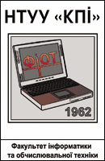

|

|
Чому важко вчитись?
- Високі вимоги: дедлайни, курсові та контрольні роботи завжди під постійним тиском.
- Конкуренція серед найкращих студентів змушує докладати ще більше зусиль.
- Технічні предмети вимагають не лише знання теорії, але й багато практики, що робить навчання справжнім викликом для кожного.
|
НАШІ НАДЗВИЧАЙНІ ПЕРЕВАГИ!
Ви навіть не уявляєте, як іноді складно зробити певні роботи.
Але не хвилюйтеся, адже ми завжди готові допомогти вам.
Ми здатні відшукати роботи будь-якого року, зважаючи на ваші потреби.
Все дуже просто: ви повідомляєте нам про свій запит, а ми виконувємо роботу швидко та ефективно.
-
Купуючи готові роботи минулих років саме у нас, ви отримуєте якісний матеріал, перевірений часом і успішно використаний багатьма студентами. Наші роботи допоможуть вам не лише зрозуміти складні теми, а й зекономити час на виконанні задач. Всі роботи відповідають сучасним вимогам викладачів, тому ви можете бути впевнені у високих результатах.
-
Ми пропонуємо не тільки широкий вибір робіт з різних дисциплін, але й індивідуальний підхід, що гарантує відповідність вашим потребам. Завдяки нашим матеріалам ви зможете легко підготуватися до заліків і екзаменів, залишивши стрес позаду. Успіх у навчанні з нами стає доступнішим!
-
Наші ціни – доступні для кожного студента, а гарантія якості і постійна підтримка роблять співпрацю з нами приємною і ефективною. Ви можете бути впевнені в оригінальності і актуальності матеріалу, який допоможе вам впоратися з будь-якими навчальними викликами.
|